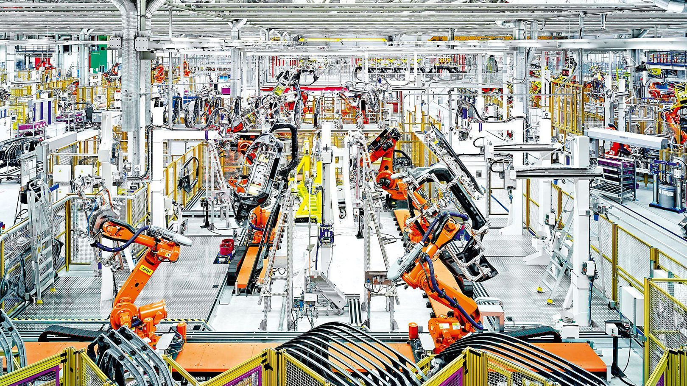

Introduction
Automated workers are the next step forward in humans progression into the future, but when it comes to automated workers there are only a few queries that come to mind, What is currently going on with automated workers? What is coming in the near future? And what will happen to us?
Automated Workers of Today
In todays society there are quite a lot of robotic workers that are being used to assist humans in differnet types of industries, for instance in the manufacturing industry you will find robotic workers most prevelent in the car factories, most car factories have machines that help build cars, but still require people to help manufacture products, there is only one factory that is fully automated and that belongs to BMW. (White, 2014)
In some resturaunts around the world there are robots that are capable of making sushi, noodles, pancakes and pizza, but in japan an amusement park by the name 'Huis Ten Bosch Theme Park' took it one step further by having a restaurant within the thempark with more robot workers than humans. There are differnet robots for different jobs, such as a one handed robot that makes savoury pancakes, while another can make cocktails and another makes doghnuts. In addition to cooking there will be a robot that comes to your table to tell you when you have 10 mins before